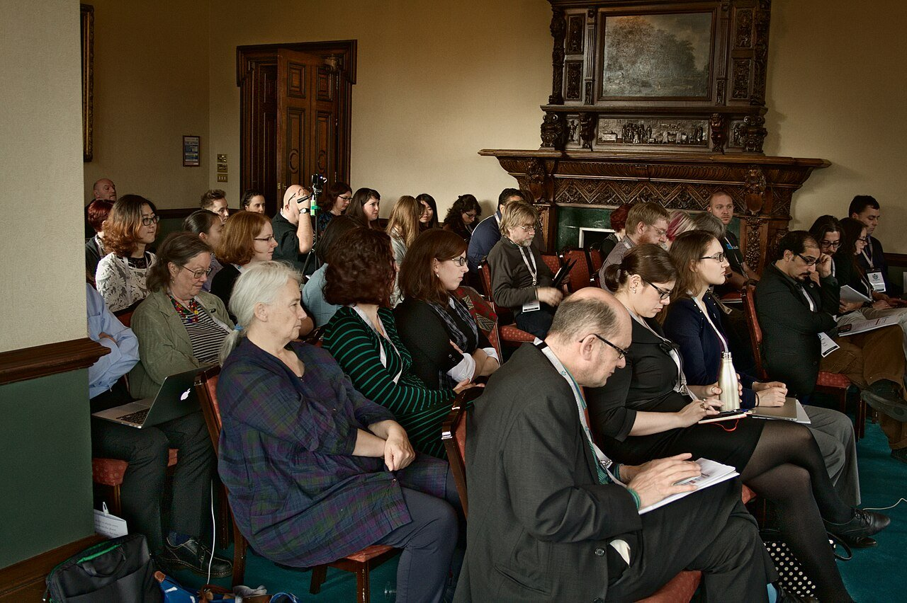
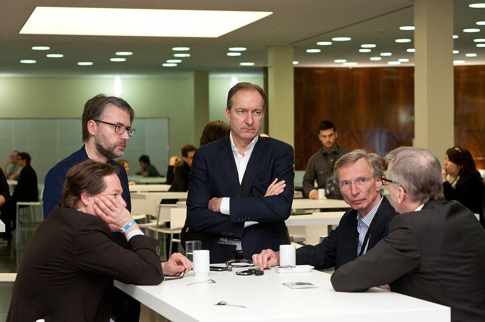
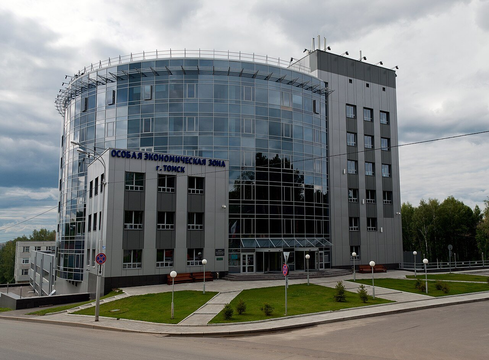
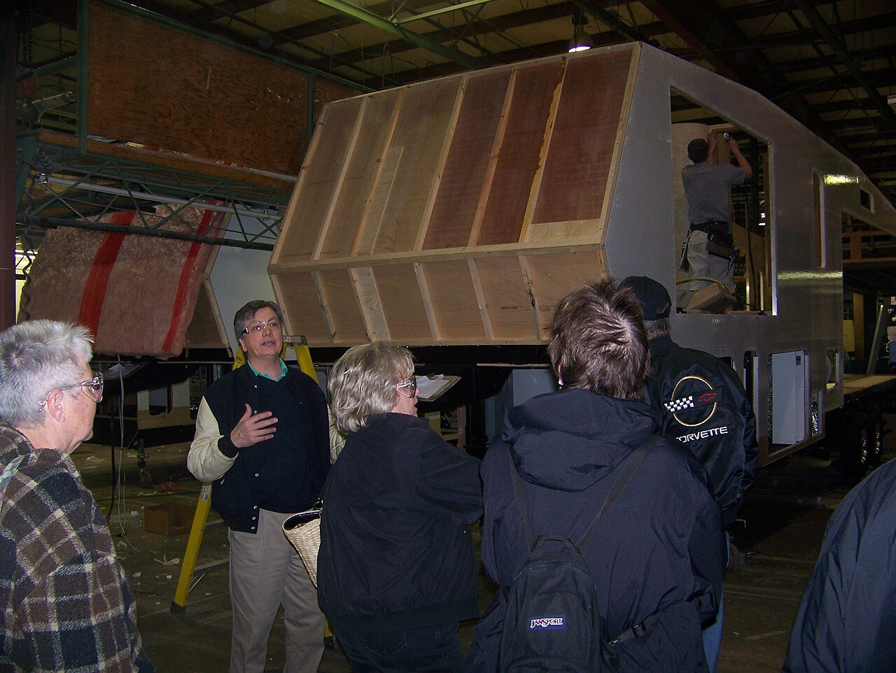
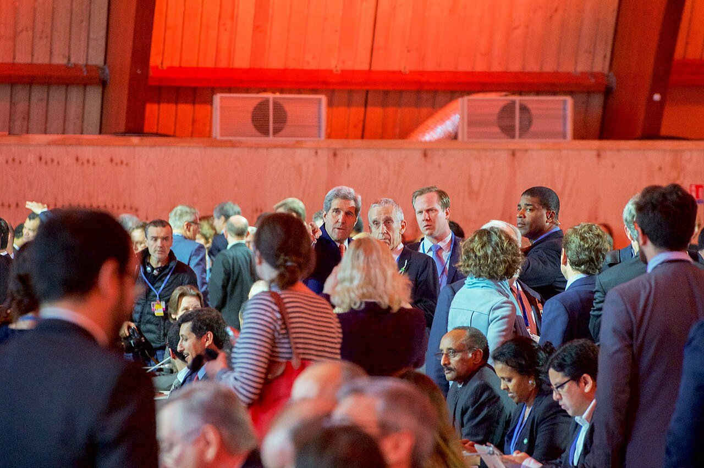

Сибирский форум Торгово-промышленной палаты Томской области
V Сибирский форум
Производительность
и устойчивое развитие
Регистрация откроется 2 марта
До начала форума
День 5 из 5 · сейчас: Пленарное заседание13:00–14:30 · ОЭЗ «Томск», пр. Развития, 3
Итоги и материалы
Юбилейный форум объединит российских и зарубежных экспертов, представителей органов государственной власти, производственных компаний, региональных центров компетенций в сфере производительности труда, центров стандартизации и метрологии, экспертов Торгово-промышленной палаты России, научного сообщества, компаний-участников национального проекта «Эффективная и конкурентная экономика».
- Дней
- 5
- дней программы
- Треки
- 8
- тематических треков
- Спикеры
- 100+
- спикеров
- Экскурсии
- 4
- экскурсии на предприятия
Спикеры форума
Представители власти, промышленности, науки и бизнеса — из Томска, Москвы, регионов Сибири и из-за рубежа.
Основные темы форума
Каждая тема — отдельный трек программы. Нажмите на тему, чтобы увидеть её сессии.
Программа форума
Пять дней: визиты на предприятия, мастер-классы, конференции и главный день с параллельными треками. Программа форума может дополняться и корректироваться.
Экскурсии на предприятия
Четверг, 16 апреля. Места в автобусе ограничены — записывайтесь при регистрации. Если мест нет, можно встать в лист ожидания.
Организаторы форума
Партнёры форума
Чтобы стать партнёром мероприятия, свяжитесь с нами по телефону +7 (929) 372-19-86 или почте kfa@tomsktpp.ru
Как проходят форумы





Контакты
Участие, регистрация и партнёрство
Фёдор Александрович Косенков
Организатор
Союз «Торгово-промышленная палата Томской области»
- г. Томск, Красноармейская, 71а
- +7 (3822) 278-288
- mail@tomsktpp.ru
Площадки форума
ОЭЗ «Томск», пр. Развития, 3
Открыть маршрут в Яндекс Картах